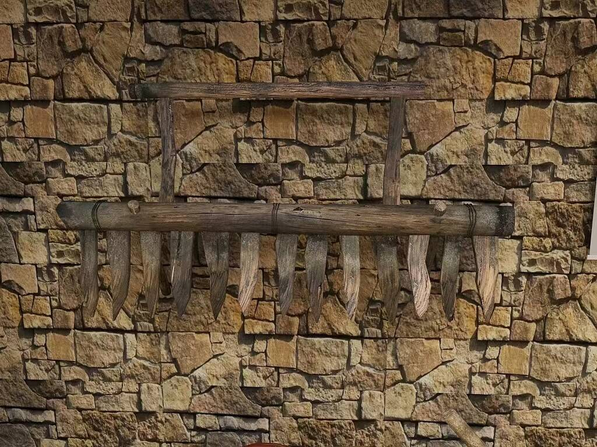
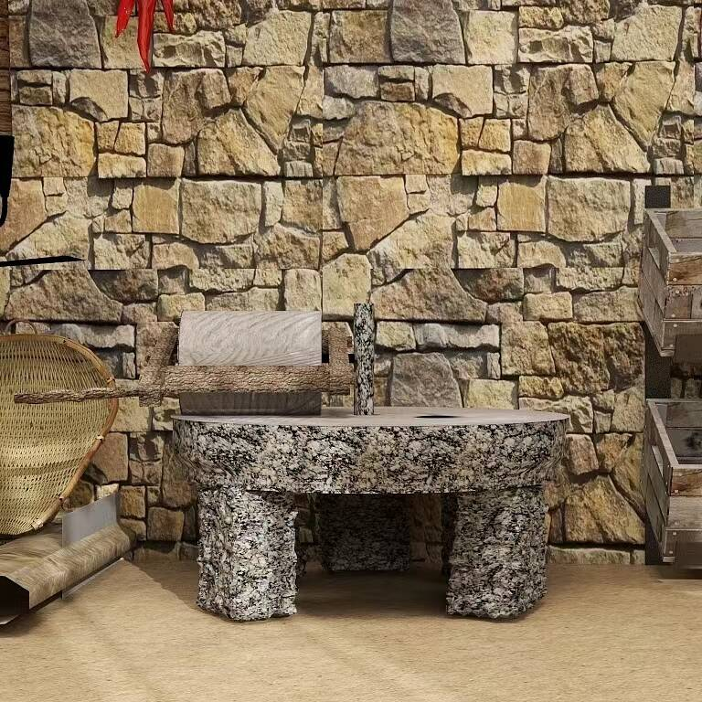
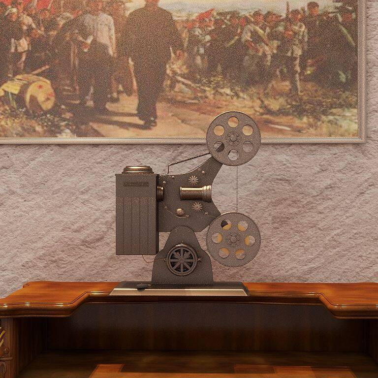
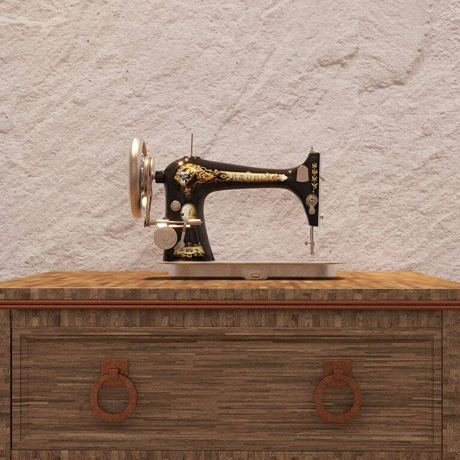
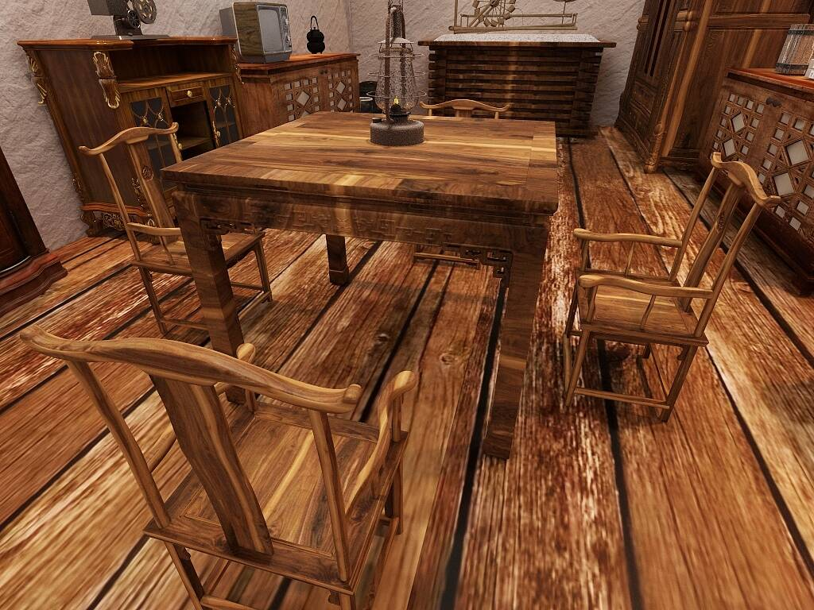

风扇车的组成是在一个轮轴上安装若干扇叶，转动轮轴就可产生强气流。它们没有特设的风道，因此，风扇产生的风是向四面流动的。人们通过手摇或脚踏的方式，使扬谷扇车旋转，产生空气流动，从而将经过舂 、碾后的糠、麸 ;或经过脱粒、晾晒秕、草除去，以达到净化粮食谷物的目的。
耖在西晋时期岭南已出现，至宋代始得以推广、并与耕、耙结合。是疏通田地泥土的器具，在熟化水田土壤方面有极重要作用。 耖 ，是一种跟耙相似的农具，能把耙过后的土块弄碎、把土弄得更细，使土地更加平整。
石磨，是用于把米、麦、豆等粮食加工成粉、浆的一种机械。 磨是平面的两层，两层的接合处都有纹理，粮食从上方的孔进入两层中间，沿着纹理向外运移，在滚动过两层面时被磨碎，形成粉末。是以前家家户户常见的用具。
从历史悠久的老式放映机到现代的数字放映技术，电影放映设备的发展不仅见证了技术的革新，也反映了人类对光影世界探索的热情与坚持。虽然老式放映机逐步退出历史舞台，但它所承载的珍贵记忆和文化价值将永远留存于人们的心中。
缝纫机始于十八世纪中叶工业革命后，是用一根或多根缝纫线，在缝料上形成一种或多种线迹，使一层或多层缝料交织或缝合起来的机器。缝纫机能缝制棉、麻、丝、毛、人造纤维等织物和皮革、塑料、纸张等制品，缝出的线迹整齐美观、平整牢固，缝纫速度快、使用简便。
这个老式桌椅是农耕展馆中展示的传统家具之一，它体现了中国农村家庭的生活场景和传统文化。桌子的四角设计简洁，没有过多装饰，显示出实用主义的特点。椅子的设计同样简约，椅背和座位部分采用了传统的榫卯结构，既美观又稳固。